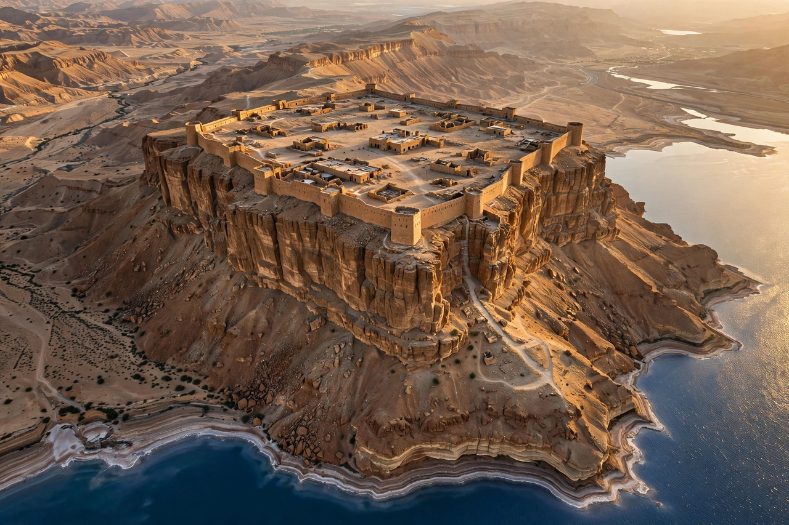

Masada (Hebrew: מְצָדָה, metzada, "fortress") is an ancient fortification in the Judaean Desert overlooking the Dead Sea in modern Israel. Built on an isolated rock plateau, it was fortified by Herod the Great between 37 and 31 BCE. According to Josephus, the siege of Masada by Roman troops in 73 or 74 CE, at the end of the First Jewish–Roman War, ended in the mass suicide of the 960 Sicarii defenders and their families. Masada is among Israel's most popular tourist attractions and a UNESCO World Heritage Site.
| Location | Southern District, Israel; Judaean Desert, overlooking the Dead Sea |
|---|---|
| Coordinates | 31.3156° N, 35.3539° E |
| Altitude | ~400 m above the Dead Sea |
| Built | Fortified by Herod the Great, 37–31 BCE |
| Famous for | Siege of Masada, 73/74 CE |
| Status | UNESCO World Heritage Site (2001); national park |

Masada stands on an isolated, cliff-sided plateau at the eastern edge of the Judaean Desert, rising roughly 400 metres above the western shore of the Dead Sea. The rhomboid summit measures about 550 by 270 metres. Access in antiquity was by steep paths, principally the "Snake Path" on the eastern face.
Herod the Great fortified Masada as a refuge against his enemies and as a royal winter retreat, building two palaces — including the Northern Palace terraced down the cliff face — together with storerooms, barracks, an armoury, and a sophisticated water system of dams and cisterns that harvested flash-flood runoff from the desert wadis.
After the fall of Jerusalem in 70 CE, Masada was the last Jewish stronghold. A group of Sicarii under Eleazar ben Ya'ir held it with their families — some 960 people in Josephus's account. In 72 CE the Roman governor Lucius Flavius Silva besieged the fortress with the Tenth Legion and auxiliaries, building a circumvallation wall, eight camps whose remains are still visible, and a massive siege ramp on the western side. When the Romans breached the wall, Josephus relates that the defenders set fire to the fortress and killed one another by lot rather than submit. Only two women and five children, hidden in a cistern, survived to tell the story.
Masada was identified in 1838 and extensively excavated in 1963–1965 by Yigael Yadin. Finds include Herodian palaces and baths, a synagogue (among the oldest known), storerooms still containing jars, ostraca — including one inscribed "ben Ya'ir" — and the remains of the Roman siege works, the most complete surviving anywhere. Scholars continue to debate how closely the archaeology matches Josephus's dramatic account; the core siege narrative, however, is supported by the circumvallation and ramp.
In the twentieth century Masada became a powerful symbol of Jewish resistance and Israeli nationhood, summed up in the phrase "Masada shall not fall again." It was a site of pilgrimage for youth movements and a swearing-in location for armoured corps recruits. Today a cable car and the Snake Path carry large numbers of visitors to the summit. Masada was inscribed as a UNESCO World Heritage Site in 2001.